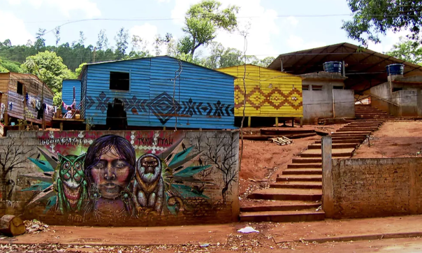
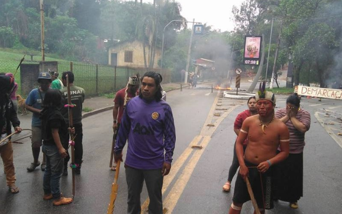

História do Jaraguá
De acordo com o senso comum, a origem desse bairro se deu no dia 1 de
outubro de 1891, data em que a empresa São Paulo Railway Company Ltd.
instalou na região a estação Taipas de trens (que nos anos 1940
passaria a ser chamada de estação Jaraguá), construída como parte das
obras da ferrovia Santos-Jundiaí.
Essa estação de trens, por sua vez, levara esse nome porque nas suas
proximidades havia algumas casas feitas com taipa, um método de
construção que consiste no preenchimento de gradeados de madeira com
barro amassado.
Muitas destas casas de taipa serviam como ponto de parada para
tropeiros que se locomoviam do interior do estado para dentro da
cidade de São Paulo conduzindo gado para um abatedouro que ficava em
Pirituba. Contudo, antes que os tropeiros pudessem colocar suas botas
nesse solo, o português Afonso Sardinha (um dos mais antigos moradores
da capitania de São Vicente) já havia construído, em 1580, um casarão
- por meio da técnica de taipa de pilão - nos sopés do que hoje
conhecemos como Pico do Jaraguá (também chamado de Senhor dos Vales) e
do Pico do Papagaio.
Casarão de Afonso Sardinha, no sopé do Pico do Jaraguá.
No subsolo do referido casarão fora construída uma senzala, na qual
Sardinha mantinha em cativeiro os negros que trazia da África e que
eram destinados a servir o senhorio (segundo informações dos guias do
Parque Estadual do Jaraguá). Já os escravos cuja força de trabalho era
empregada na extração de ouro do Senhor dos Vales eram mantidos em
senzalas distantes do casarão.
Mas muito antes que Sardinha ousasse cruzar o Oceano Atlântico,
desembarcar no local que denominamos atualmente como Santos, subir a
Serra do Mar, transpor o Planalto Paulista e chegar ao Jaraguá
passando pelo lugar onde hoje é a Parada de Taipas, aqui já viviam os
índios das famílias linguísticas Gê e Tupi-guarani.
Para se ter uma vaga ideia do que era esse lugar nos anos pré 1.500,
as recentes obras de movimentação de terra para a construção do
Rodoanel Mário Covas revelaram dois sítios arqueológicos indígenas, um
dos quais datado de 1.290 d.C, conforme nos dá a conhecer o trabalho
"Ocupações ceramistas Tupi e Gê em São Paulo" produzido por Marisa
Coutinho Afonso.
Os selvícolas que aqui viviam, por seu turno, não adentravam a área
onde localiza-se o Pico do Jaraguá, pois achavam que tudo ali era
sagrado. Mais do que isso, eles impediam que outros o fizessem. Nesse
contexto, só havia uma forma de Sardinha entrar lá e saquear da terra
o metal amarelo: passando por cima dos cadáveres dos selvícolas, o que
foi exatamente o que ele fez:
"Os indígenas que ocupavam e defendiam as redondezas do 'Senhor dos
vales' foram pegos de surpresa, dominados e muitos exterminados.
Outros tornaram-se escravos para que Afonso Sardinha instalasse,
efetivamente, a mineração de ouro a partir de 1590, sendo a primeira
mineração registrada nos anais da Câmara da Vila de São Paulo de
Piratininga." - fonte desconhecida em citação feita pelo historiador
Wilson Alves de Castro em seu livro "Morro Jaraguá: o Senhor dos
Vales".
População do Jaraguá ao longo dos anos
Em 2000, como se pode ver no gráfico, a quantidade de moradores do
bairro já era quase 30 vezes maior do que em 1950 e, em 2012, a marca
ultrapassou 200 mil habitantes, o que confere ao distrito uma
população de cidade média.
Desde o ano 2003 é possível observar de cima para baixo via imagens de
satélite fornecidas pelo Google Earth o crescimento do distrito. Por
meio dessa tecnologia foi possível produzir o artigo "12 imagens de
satélite revelam a evolução do Centro do bairro Jaraguá", com inúmeros
detalhes sobre desmatamentos, construções de moradias e de itens de
infraestrutura urbana.
A evolução do distrito também pode ser acompanhada por meio do projeto
"Expedições fotográficas aos vilarejos do bairro Jaraguá", no qual eu
tenho entrevistado moradores e fotografado cada uma das vilas, em um
processo concebido em um ângulo diferente: de dentro para fora.
Entretanto, seja lá como forem feitas as observações (de cima para
baixo, de dentro para fora, do presente para o passado ou do passado
para o presente), é possível verificar que o bairro Jaraguá está em
constante mutação e que, apesar de ele estar completando hoje 125 anos
de história, a sua história é grande demais e não cabe dentro de seus
125 anos.
|  |  |
|
RESTAURANTES |
FAST FOOD |
CABELELEIRO |